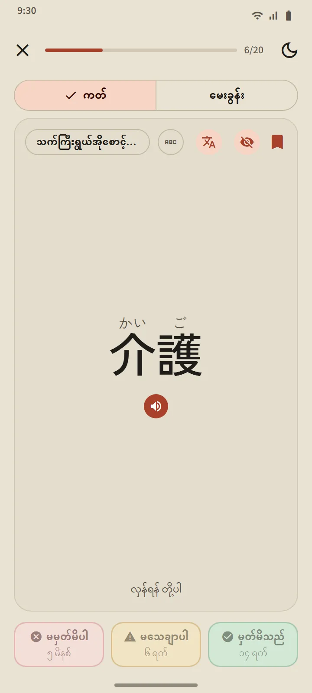
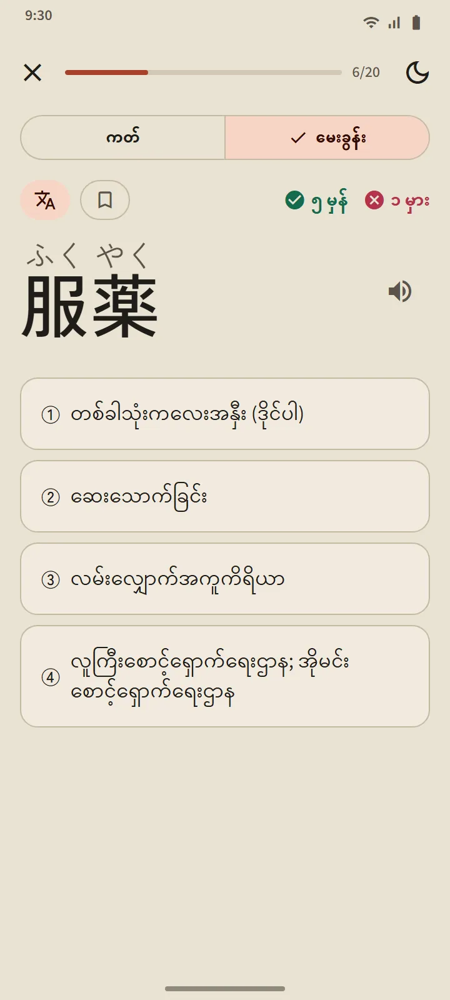
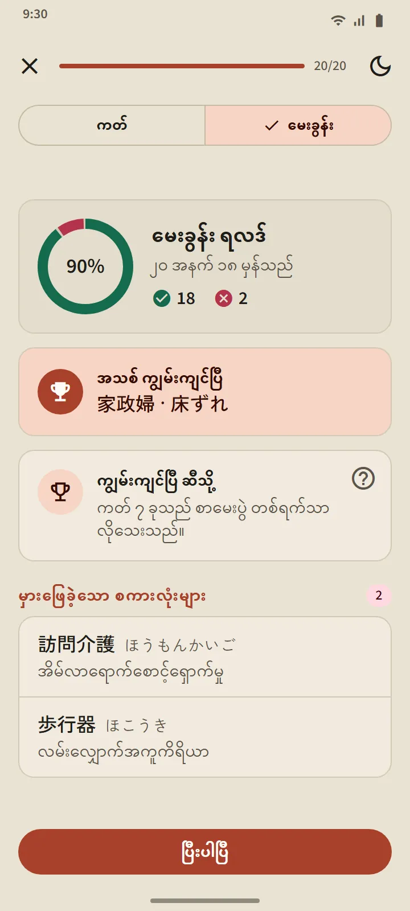
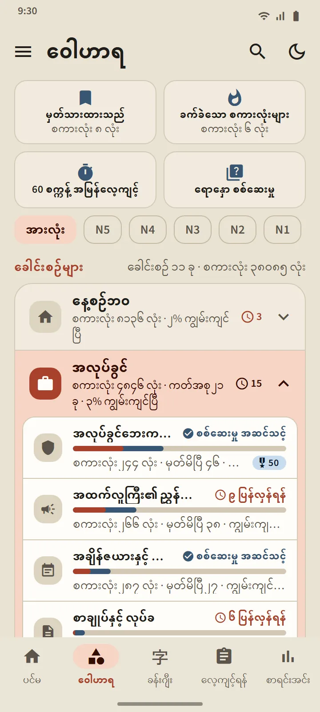
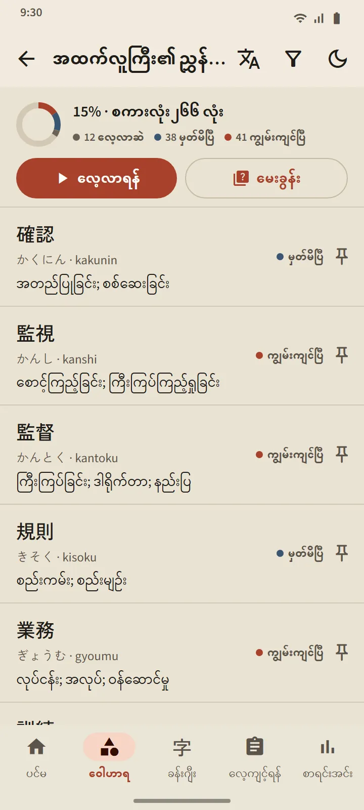
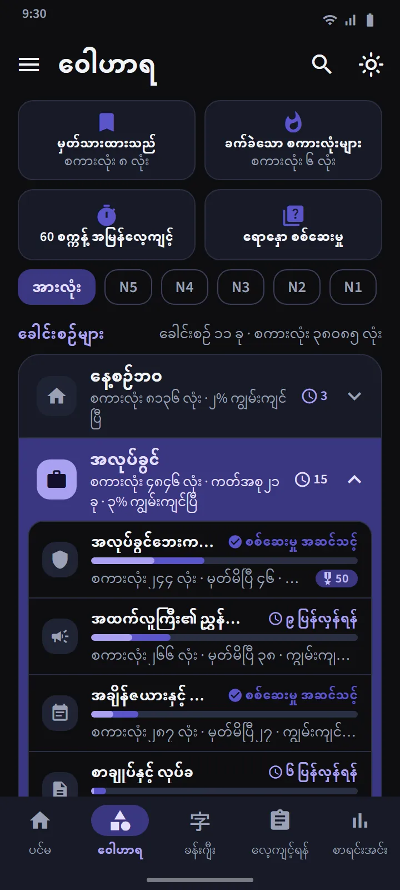
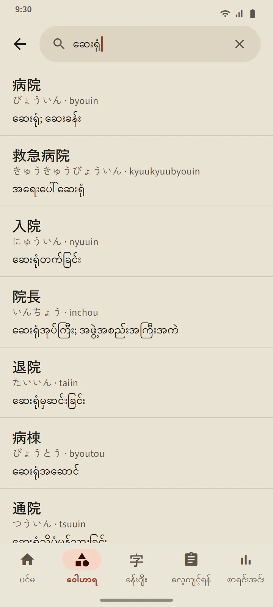
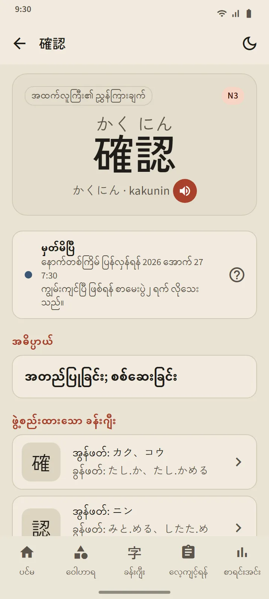

မေ့ခါနီးကို သိသော ကတ်များ
ကတ်၏ ရှေ့ဘက်တွင် စကားလုံးကို ပြသည် (လိုချင်လျှင် ဖူရိဂနာနှင့်အတူ)။ နှိပ်၍ လှန်လိုက်လျှင် အဖတ်၊ ရိုမာဂျိ၊ အဓိပ္ပာယ်နှင့် ပါဝင်သော ခန်းဂျီးများ၊ အသံထွက်ခလုတ်တို့ ပေါ်လာသည်။ ထို့နောက် ခလုတ်သုံးခုအနက် တစ်ခုဖြင့် ကိုယ့်ကိုယ်ကို အမှတ်ပေးပါ။
စီစဉ်ခြင်းကို ခေတ်မီ flashcard အက်ပ်များ သုံးသော spaced-repetition algorithm ဖြစ်သည့် FSRS က လုပ်ဆောင်သည်။ ခလုတ်တိုင်းတွင် စကားလုံး ပြန်ပေါ်လာမည့်အချိန်ကို မိနစ်၊ ရက် သို့မဟုတ် ပတ်ဖြင့် ပြထားသည်။ မှတ်မိသည် ဟု ဖြေလေ၊ ကြားကာလ ပိုရှည်လေ ဖြစ်သည်။
- မမှတ်မိပါ က အဆင့်ဘယ်နေရာမှ ဖြစ်စေ စကားလုံးကို လေ့လာဆဲသို့ ပြန်ပို့သည်။
- မသေချာပါ က ကြားကာလကို တိုစေသည်။
- မှတ်မိသည် က စကားလုံးကို မှတ်မိပြီ သို့ ရွှေ့ပြီး နောက်ပြန်လေ့ကျင့်ချိန်ကို ပိုဝေးစေသည်။

အဆင့်လေးဆင့်၊ ကျွမ်းကျင်ပြီ ကို သက်သေပြရမည်
စကားလုံးတိုင်း အဆင့်လေးဆင့် တက်သည်- အသစ်၊ လေ့လာဆဲ၊ မှတ်မိပြီ၊ ကျွမ်းကျင်ပြီ။ ကတ်ပေါ်တွင် မှတ်မိသည် ကို နှိပ်ရုံဖြင့် စကားလုံးကို မှတ်မိပြီ အထိသာ ရောက်စေသည်။ ကျွမ်းကျင်ပြီ ရောက်ရန် မေးခွန်းတွင် မတူညီသော ရက် 3 ရက် မှန်အောင် ဖြေရမည်။ ကျွမ်းကျင်ပြီးသော စကားလုံးများကို ရက်ရောက်သောအခါ ဆက်၍ စစ်ဆေးပြီး မှားလျှင် အဆင့်ပြန်ကျသည်။
ကတ်အစုတစ်ခု၏ မေးခွန်းသည် ၎င်း၏ စကားလုံး 20 လုံး မှတ်မိပြီ သို့မဟုတ် ကျွမ်းကျင်ပြီ ဖြစ်သောအခါ ဖွင့်သည် (အသေးစားကတ်အစုများမှာ စကားလုံးအားလုံး မှတ်မိပြီးသည်နှင့် ဖွင့်သည်)။ မေးခွန်းများသည် နှစ်ဖက်စလုံးဖြစ်သည်- စကားလုံးမှ အဓိပ္ပာယ်၊ အဓိပ္ပာယ်မှ စကားလုံး။ အဆုံးတွင် အသစ်ကျွမ်းကျင်လာသော စကားလုံးများ၊ တစ်ဆင့်သာ လိုသော စကားလုံးများနှင့် မှားခဲ့သော စကားလုံးများကို တွေ့ရသည်။


ခေါင်းစဉ်အလိုက် လေ့လာပြီး စကားလုံးတိုင်းကို ခြေရာခံပါ
ဝေါဟာရ တက်ဘ်ကို အုပ်စု 11 ခု ခွဲထားပြီး အုပ်စုတစ်ခုစီတွင် ကတ်အစုငယ်များ ရှိသည်။ အပေါ်ဘက်ရှိ စစ်ထုတ်မှုက အားလုံးကို JLPT အဆင့်တစ်ခုတည်းသို့ ကျဉ်းစေသည်။ ကတ်အစုတိုင်းတွင် ကိုယ်ပိုင်မျက်နှာပြင်ရှိသည်- ပြီးမြောက်ရာခိုင်နှုန်းစက်ဝိုင်း၊ စကားလုံးတစ်လုံးစီ၏ အခြေအနေပါသော စကားလုံးစာရင်း၊ လေ့လာဆဲ/မှတ်မိပြီ/ကျွမ်းကျင်ပြီ စစ်ထုတ်မှုနှင့် လေ့လာရန်၊ မေးခွန်း ခလုတ်များ။
အလုပ်ခွင် အုပ်စုတွင် ဂျပန်၌ အလုပ်လုပ်မည့်သူများအတွက် ကတ်အစု 21 ခု ရှိသည်- အလုပ်ခွင်ဘေးကင်းရေး, အထက်လူကြီး၏ ညွှန်ကြားချက်, အချိန်ဇယားနှင့် ရုံးတက်ခြင်း, စာချုပ်နှင့် လုပ်ခ, ကိရိယာနှင့် တိုင်းတာရေးကိရိယာ, ထောက်ပံ့ပို့ဆောင်ရေးနှင့် ဂိုဒေါင်, ရုံးနှင့် စာရွက်စာတမ်း, အစားအစာ ထုတ်လုပ်ခြင်း, သက်ကြီးရွယ်အိုစောင့်ရှောက်ရေး, စက်ရုံနှင့် ထုတ်လုပ်မှု, စက်မှုလုပ်ငန်းသုံးစက်, အီလက်ထရောနစ်နှင့် လျှပ်စစ်, ဆောက်လုပ်ရေး, စားသောက်ဆိုင်နှင့် မီးဖိုချောင်, စိုက်ပျိုးရေး, သင်္ဘောတည်ဆောက်ရေး, အဆောက်အအုံသန့်ရှင်းရေး, ငါးလုပ်ငန်း, ကားလုပ်ငန်းနှင့် ပြင်ဆင်ရေး, လေကြောင်းနှင့် လေဆိပ်, ဟိုတယ်နှင့် ဧည့်ဝတ်ပြုလုပ်ငန်း။ ဂျပန်တွင် နေထိုင်ရေးအတွက် သယ်ယူပို့ဆောင်ရေး၊ ဈေးဝယ်နှင့် ငွေကြေး၊ အိမ်နှင့် ပရိဘောဂ ကတ်အစုများနှင့် လူမှုရေးနှင့် စီမံခန့်ခွဲမှု နှင့် ခန္ဓာကိုယ်နှင့် ကျန်းမာရေး အုပ်စုများလည်း ရှိသည်။
| အုပ်စု | ကတ်အစုများ |
|---|---|
| နေ့စဉ်ဘဝ | 16 |
| အလုပ်ခွင် | 21 |
| လူမှုရေးနှင့် စီမံခန့်ခွဲမှု | 8 |
| ခန္ဓာကိုယ်နှင့် ကျန်းမာရေး | 8 |
| စရိုက်နှင့် စိတ်ခံစားမှု | 8 |
| စကားလုံးအမျိုးအစား | 5 |
| နည်းပညာနှင့် မီဒီယာ | 4 |
| သဘာဝနှင့် သိပ္ပံ | 10 |
| ပညာရပ်နှင့် အမြင် | 8 |
| ယဉ်ကျေးမှုနှင့် ဘာသာရေး | 4 |
| အားကစားနှင့် ဂိမ်း | 3 |


အထူးကတ်အစုများနှင့် အမြန်လေ့ကျင့်ခန်း
အုပ်စုစာရင်း၏ အပေါ်တွင် ကတ်အစုအားလုံးမှ ယူသော ကတ်အစုသုံးခု ရှိသည်- မှတ်သားထားသည် (သင် ကြယ်ပွင့်ပေးထားသော စကားလုံးများ)၊ ခက်ခဲသော စကားလုံးများ (ကတ်တွင် မေ့နေကျ သို့မဟုတ် မေးခွန်းတွင် မှားနေကျ စကားလုံးများဖြင့် ကိုယ်တိုင်ပြည့်သွားသည်) နှင့် 60 စက္ကန့် အမြန်လေ့ကျင့် (တစ်မိနစ်အတွင်း ဆန့်သလောက် ကတ်များ)။ စတုတ္ထအကွက်ဖြစ်သော ရောနှော စစ်ဆေးမှု က ကတ်အစုအားလုံးမှ မှတ်မိပြီနှင့် ကျွမ်းကျင်ပြီ စကားလုံးများကို တစ်ပြိုင်နက် စမ်းသပ်သည်။

စကားလုံး 38,085 လုံးပါ အိတ်ဆောင်အဘိဓာန်
ခေါင်းစီးရှိ ရှာဖွေရေးအိုင်ကွန်က စကားလုံးမှန်သမျှကို ခန်းဂျီး၊ ကာနာ၊ ရိုမာဂျိ သို့မဟုတ် အဓိပ္ပာယ်ဖြင့် ရှာပေးသည်။ ရလဒ်များကို ကိုက်ညီမှုအလိုက် စီထားပြီး ရိုမာဂျိကို စာလုံးပေါင်းကွဲလွဲမှု ခွင့်လွှတ်ကာ တိုက်စစ်သည်- shinbun နှင့် shimbun၊ koohii နှင့် kōhī၊ arigato နှင့် arigatou အားလုံးက တူညီသော စကားလုံးကို ရှာတွေ့သည်။ စကားလုံးတိုင်းတွင် အသေးစိတ်စာမျက်နှာရှိသည်- ၎င်း၏ အဆင့်နှင့် နောက်ပြန်လေ့ကျင့်ချိန်၊ အဓိပ္ပာယ်၊ အဖတ်ပါ ပါဝင်သော ခန်းဂျီးများနှင့် အသံထွက်ခလုတ်။


အဆင့်များနှင့် အဓိပ္ပာယ်ဘာသာစကားများ
စကားလုံးအဆင့်များသည် ခန့်မှန်းချက်ဖြစ်သည်- Japan Foundation က တရားဝင် ဝေါဟာရစာရင်း မထုတ်ပြန်သောကြောင့် အဟောင်း JLPT စာရင်းများနှင့် အသုံးများမှုကို အခြေခံ၍ ဖွဲ့စည်းထားသည်။ သီးခြား “JFT” စကားလုံးအဆင့် မရှိပါ- JFT-Basic သည် N5 နှင့် N4 နှင့် တူသော အခြေခံဝေါဟာရကို အလုပ်ခွင်စကားလုံးများနှင့်အတူ စစ်ဆေးသည်။
အဓိပ္ပာယ်များသည် ဘာသာစကား 11 မျိုးတွင် ပြည့်စုံသည်။ ခမာနှင့် တရုတ်ဘာသာများသည် အခမဲ့စကားလုံးတိုင်းကို ဖုံးအုပ်ထားပြီး မဘာသာပြန်ရသေးသော စကားလုံးများကို အင်္ဂလိပ်လို ပြသည်။ ဘာသာပြန်ဘာသာစကားကို ဆက်တင်တွင် အက်ပ်ဘာသာစကားနှင့် သီးခြား ရွေးနိုင်သည်။
| အဆင့် | စကားလုံးများ | အခမဲ့ |
|---|---|---|
| N5 | ၁,၀၃၀ | ၁,၀၀၇ |
| N4 | ၂,၀၄၄ | ၁,၅၀၃ |
| N3 | ၁၁,၂၃၀ | ၄,၀၉၇ |
| N2 | ၁၁,၃၀၉ | ၂,၂၉၀ |
| N1 | ၁၂,၄၇၂ | ၅၀၃ |